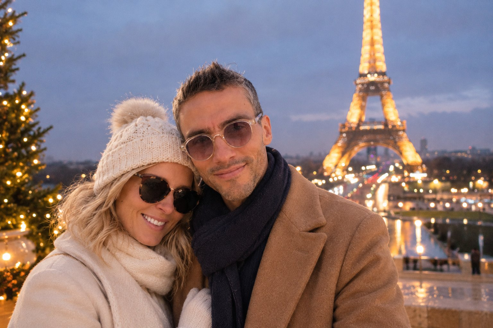
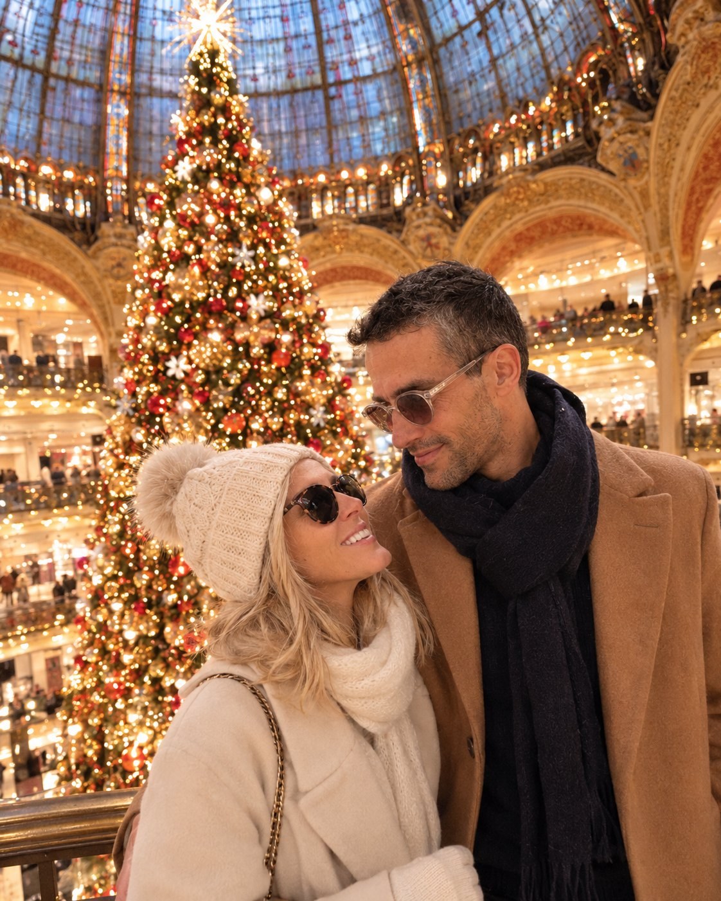

Tailor-made stay · Monday 14 to Wednesday 16 December 2026 · 2 nights
Babe, how about treating ourselves to Paris, just the two of us?
Three winter days, you and me. Skating under the Grand Palais glass roof, hot chocolates, Christmas lights and Paris all to ourselves. Pick whatever you fancy, I’ll take care of the rest.
Plan my stayFrom Rennes: about 1 h 30 by TGV to MontparnassePlaces selected: 0
Paris · Grand PalaisThe two of us on the ice

